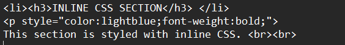
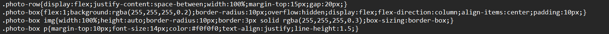
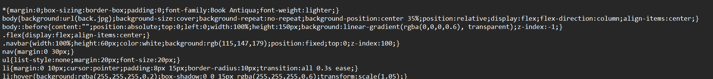

This section is styled with inline CSS.
Over here, I used inline CSS to make this text light blue and bold.

This section is styled with internal CSS.
All images in this webpage use internal CSS. The ".photo-box" class makes all photos inside the photo-row equal, gives them a transparent white background, rounds the corners, hides overflow, stacks content vertically, centers the image, and adds inner spacing between text.

This section is styled with external CSS from style.css.
This webpage uses external in its format. The background and the boxes are mostly from external. The entire navbar is styled with external, like how the navbar uses list, and the "li" tag are coded with css to make it have a nice glowing hover effect, and make the buttons look clean.
